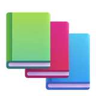

Toʻrt bosqich: Kirish, Ketish, Kampus, Karyera. Tutash chiziq tayyor bosqichni, uzuq chiziq rejadagisini koʻrsatadi. Bosqich nomini bossangiz, tafsiloti ochiladi.
Uzuq chiziqli bosqichlar hali yoʻlda. Bizam kutyapmizda :)
 Ketish
KetishViza, sugʻurta, xarajat va joʻnash. Bakalavr, Magistratura, USA va DAAD dasturlarining oxirgi modulida.

KampusYangi tizimga moslashish, amaliyot (internship) va ishlash qoidalari. Musofir talaba dasturida beriladi.
 Karyera
KaryeraKeyingi daraja, xorijda rasmiy ish yoki Oʻzbekistonga qaytish.